COMPA VIRTUAL · ESPACIOS COMPARTIDOS
Living colaborativo
Sillón en L, puffs y biblioteca; un lugar para conversar y compartir ideas.
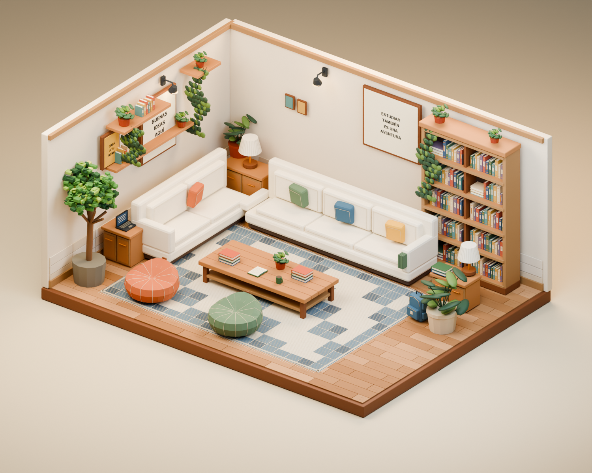
Comparar con la versión anterior
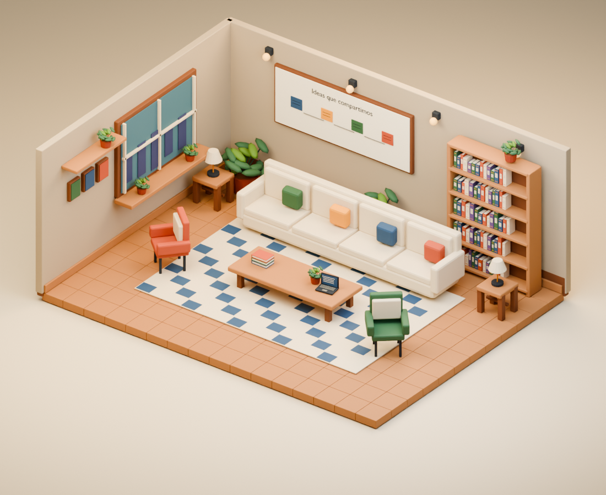
COMPA VIRTUAL · ESPACIOS COMPARTIDOS
Sala de estudio
Seis puestos de trabajo, pizarra, útiles y almacenamiento.
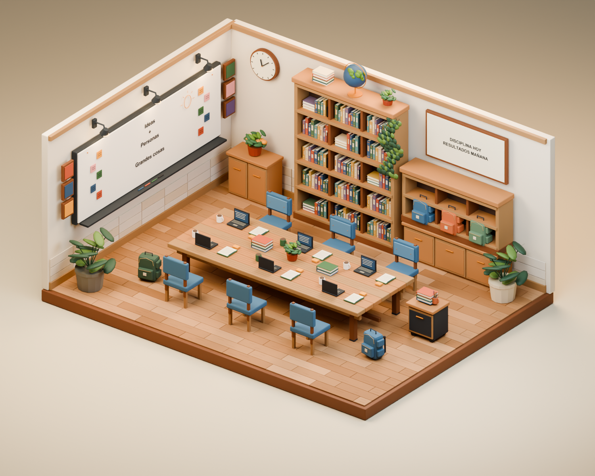
Comparar con la versión anterior
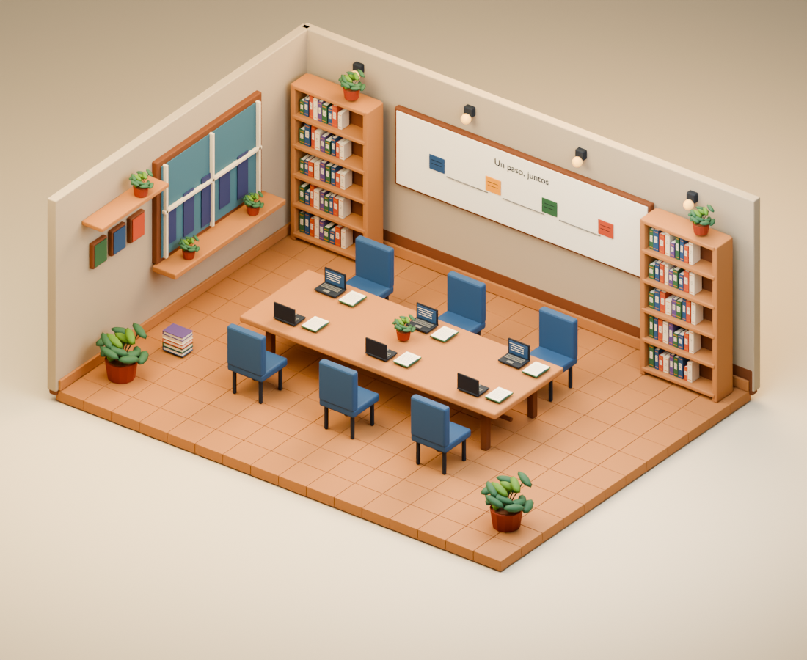
COMPA VIRTUAL · ESPACIOS COMPARTIDOS
Biblioteca moderna
Bibliotecas llenas, mesa de lectura y rincón junto al ventanal.
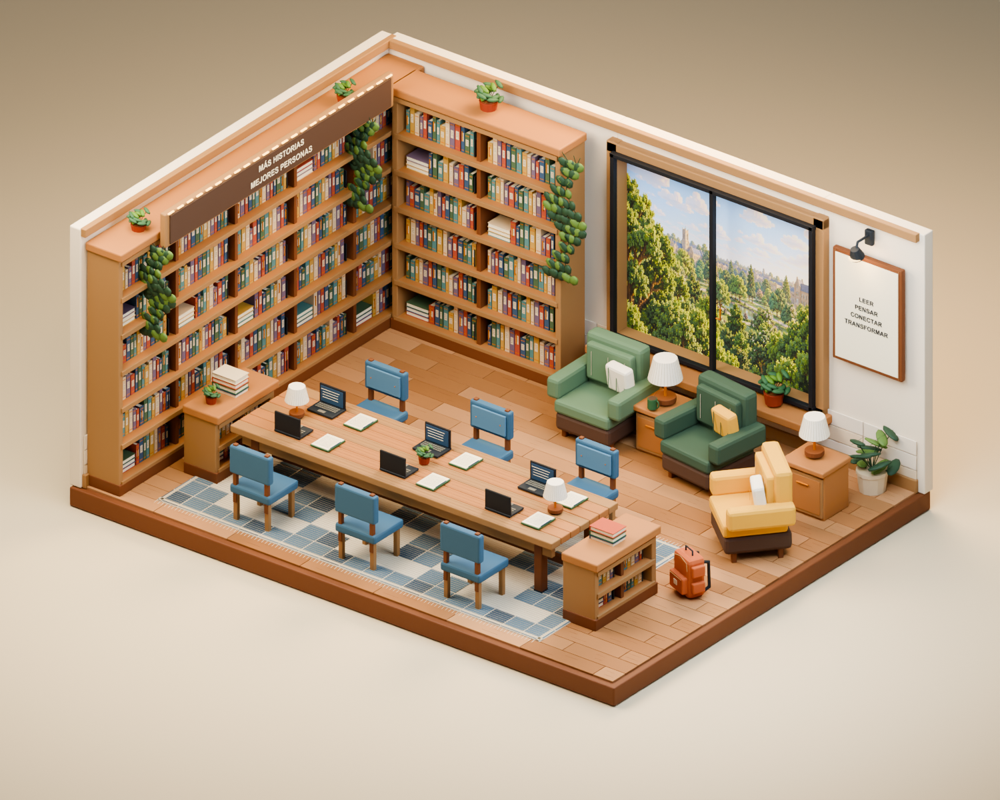
Comparar con la versión anterior
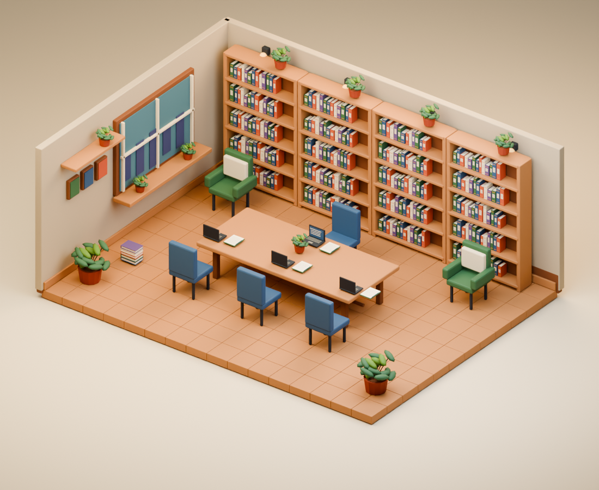
COMPA VIRTUAL · ESPACIOS COMPARTIDOS
Sala de proyectos
Bancadas, prototipos, panel de herramientas y carros de materiales.
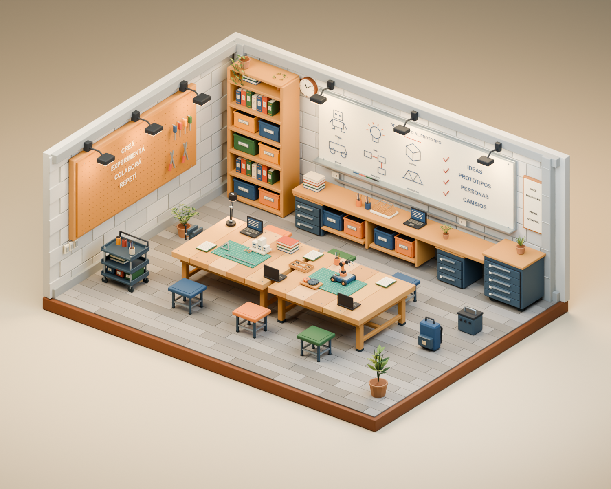
Comparar con la versión anterior
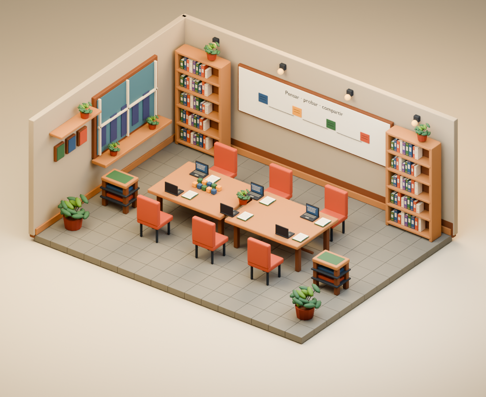
COMPA VIRTUAL · ESPACIOS COMPARTIDOS
Patio de estudio
Pérgola, sombrilla, bancos y canteros con árboles y flores.
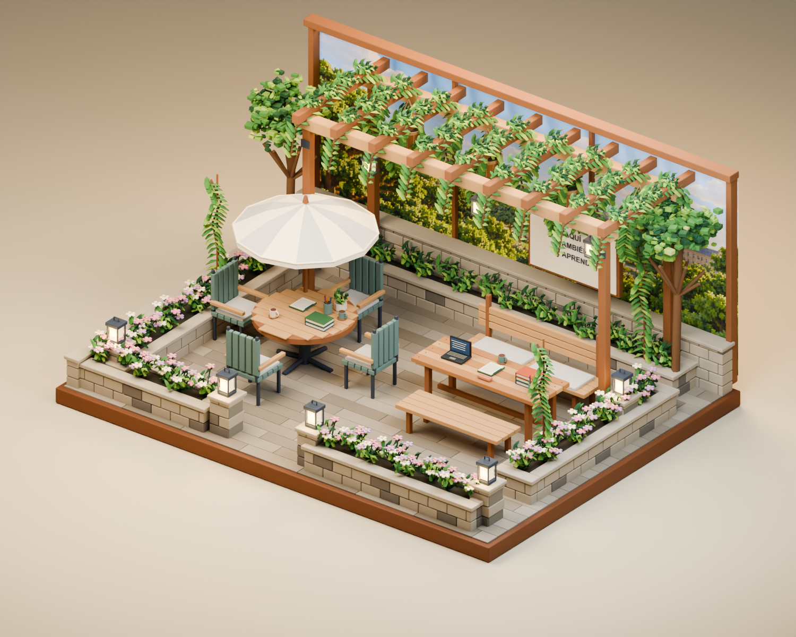
Comparar con la versión anterior
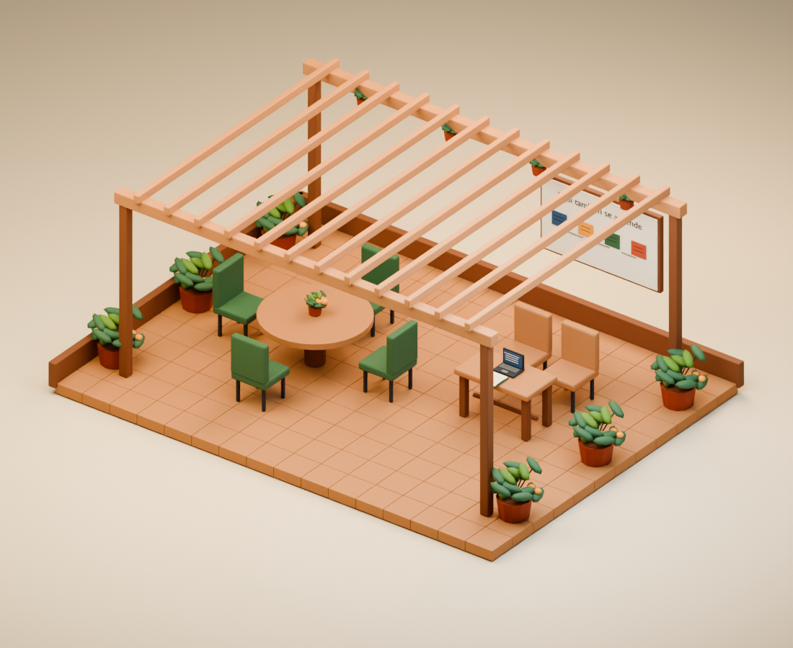
COMPA VIRTUAL · ESPACIOS COMPARTIDOS
Terraza de aprendizaje
Ciudad al atardecer, sillones, mesa compartida, faroles y fogón.
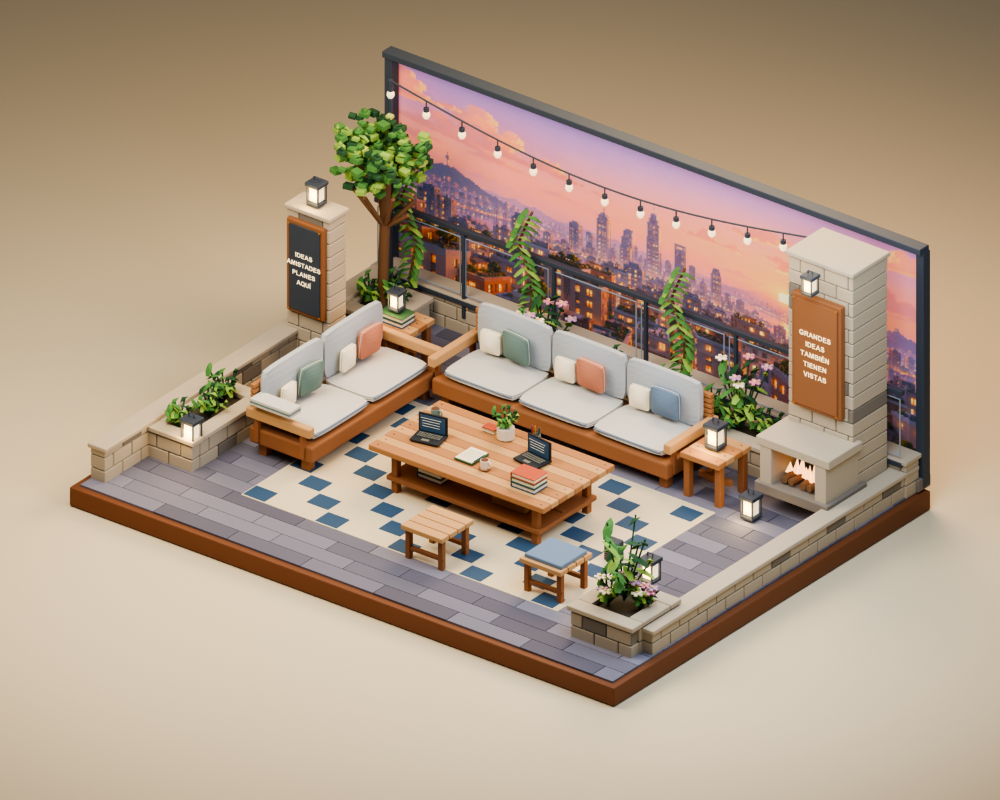
Comparar con la versión anterior
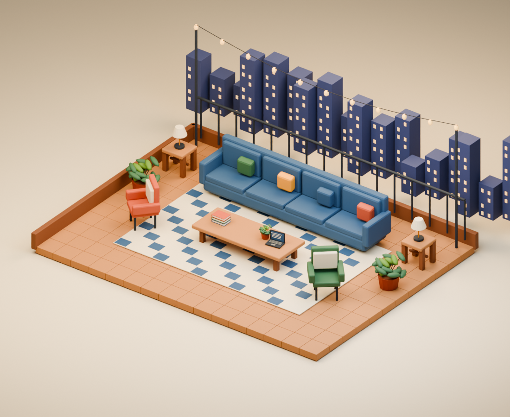